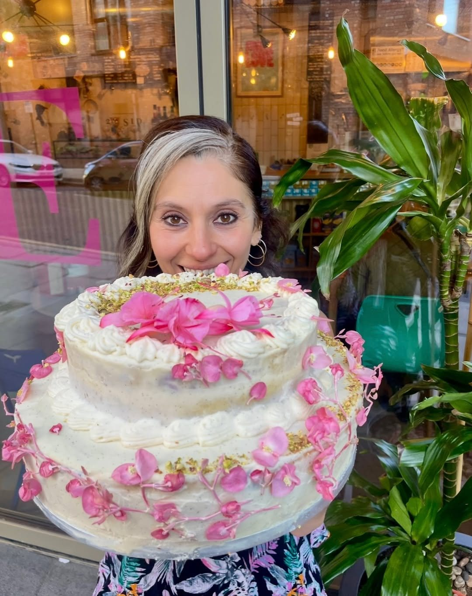
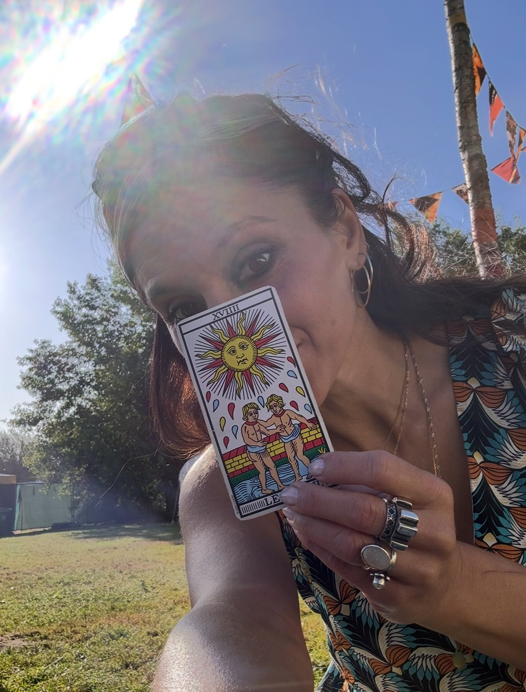
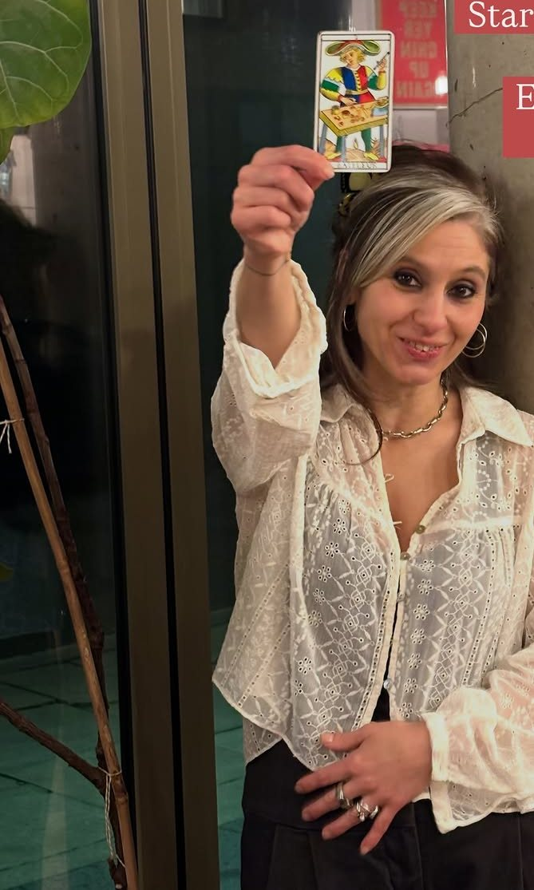
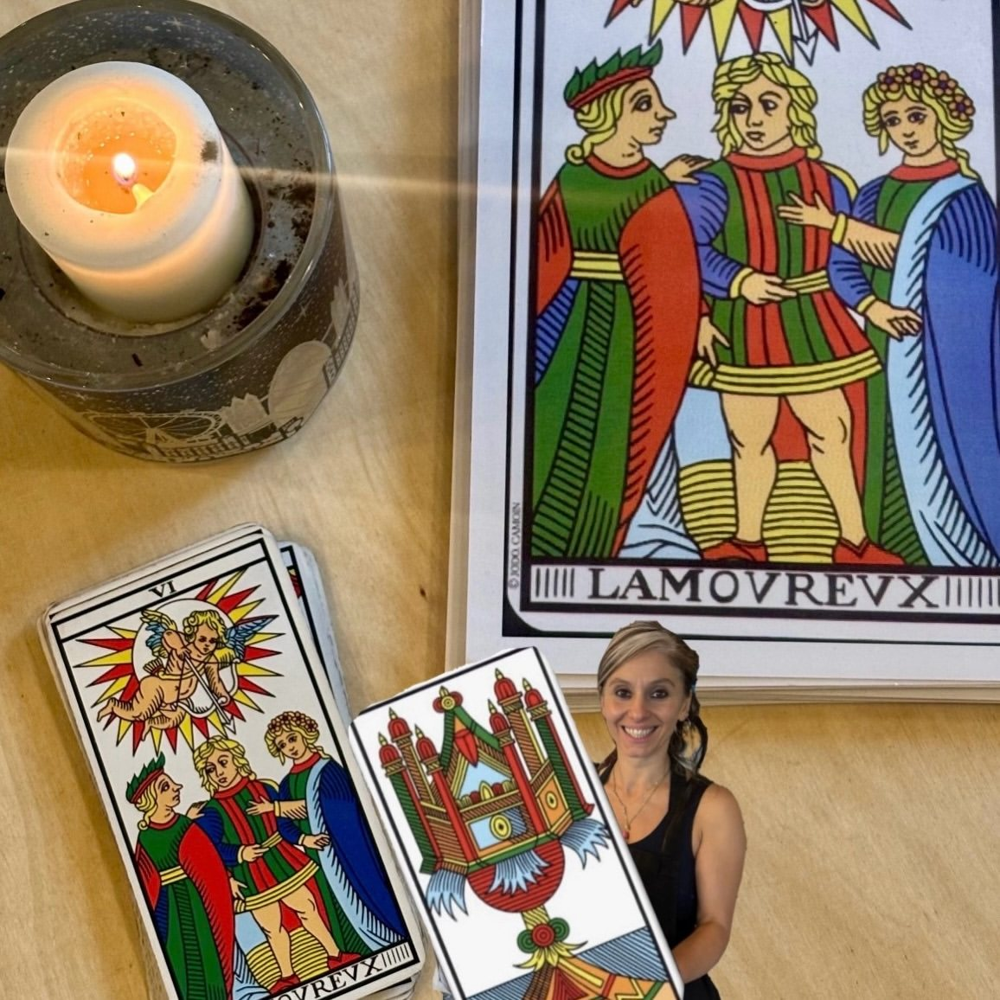
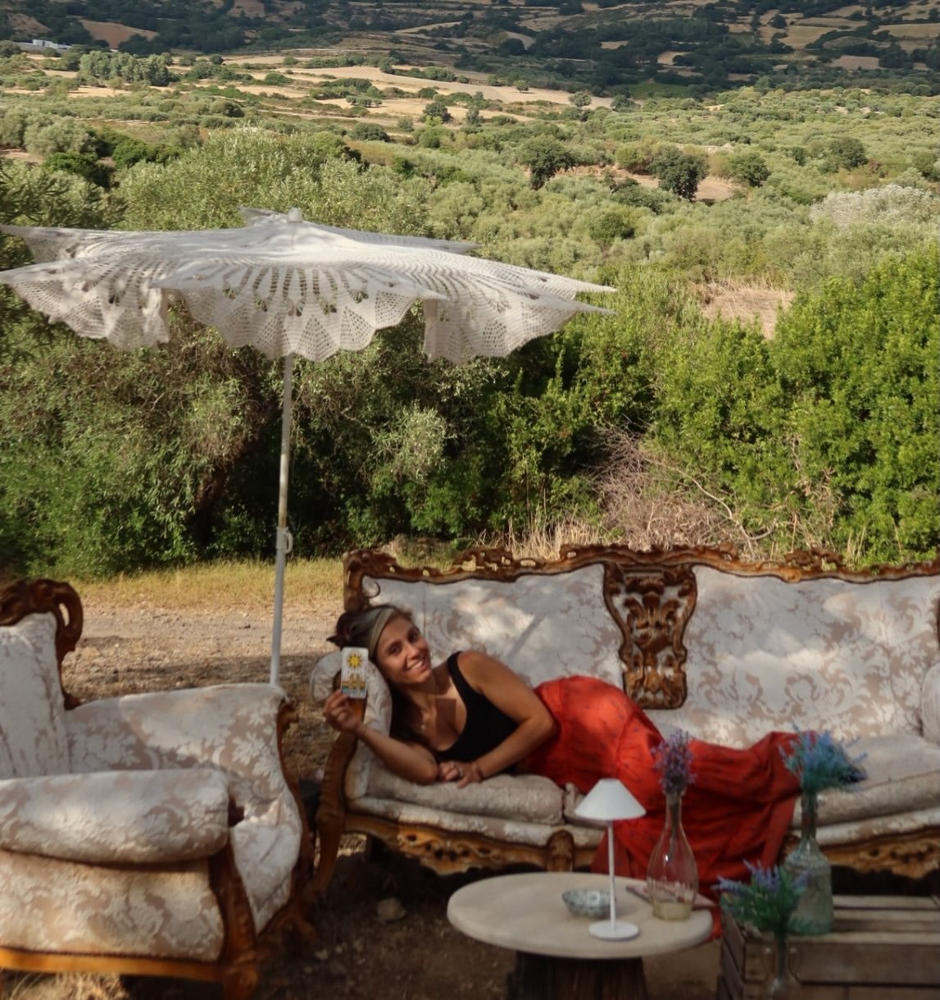

Tarologa, baker, host
Laura
Lo Faro
21 SID is what happens when one person puts everything she loves in the same room. Laura makes the coffee, bakes the cakes, reads the cards and decides what goes on the walls.
The engraved hands behind the counter are Italian gestures, because she is Italian and talks with hers. The posters say keep yer chin up and choose love. The window says just be nice. None of it is decoration. It is her, in sign form.
She reads tarot in English and in Italian, in the café and online, and teaches it to anyone curious enough to turn up on a Wednesday evening.



“Where every coffee tells a story.”
Laura, on what 21 SID is for
The tarologa
Laura works with the Tarot de Marseille and calls herself a tarologa: someone who studies the cards and reads them for reflection and self-development. A reading with her is a conversation, held over a spread of very old pictures.
She trained with several teachers, including Fabiana Spagnuolo, and now teaches herself: beginners evenings on numerology and the Fool’s Journey, five- and six-week courses, and one-to-one lessons.
The Standard included her in its guide to the best tarot readers in London.

The baker
My baking is magic too, she says, and means it. The wall behind the till reads dolce handmade coffee, in that order.
The counter fills up each morning with loaf cakes, brownies, croissants and cookies. For birthdays she builds tiered cakes and covers them in flowers.
Sometimes the dough gets kneaded right on the café tables, with company.
Away from the counter
The deck travels. Laura reads at markets, garden parties and wine bars across London, and has taken a tarot and creativity gathering to the Italian countryside with a friend.
The film here is from one of those. Its caption, in her words: Due amiche streghe si rincontrano e decidono di stare anziché sempre andare. Two witch friends meet again and decide to stay, instead of always going. So they make a tarot and creativity event for anyone who wants to slow down.
- Markets
- The Big Market at Mercato Metropolitano, the Satanic Flea Market at Electrowerkz
- Street parties
- London’s Day of the Dead on Columbia Road
- Gardens
- Solstice celebration at Allens Community Garden
- Wine bars
- Full moon tarot specials and a Hallowine tasting with Feminist Wine Bar

Who is really in charge
Laura runs the café. The dog she calls the CEO runs Laura. Yours is welcome too: the tote bag in the window reads dogs welcome, people tolerated, and she is only half joking.